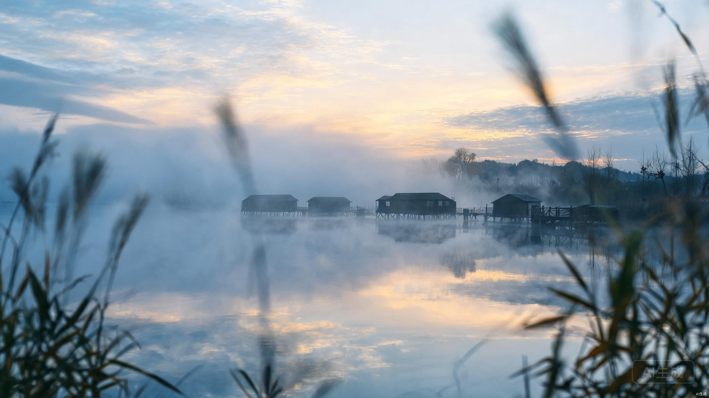
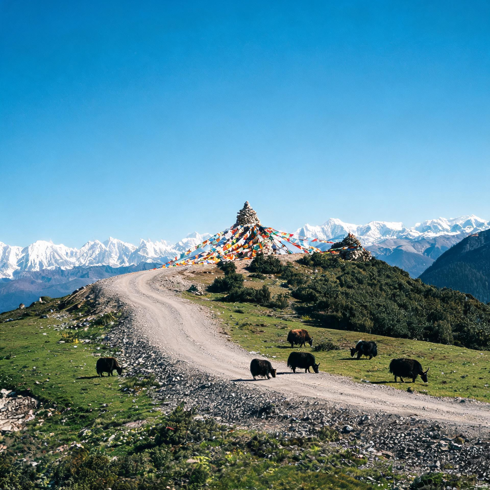
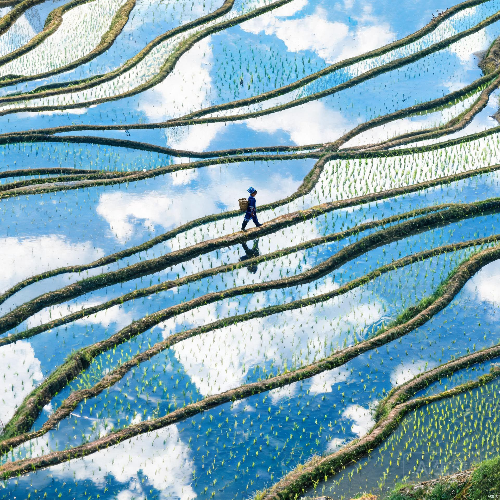

— E.K.
Choose your language to continue. Your choice will be remembered for the next visit.
A quiet corner of the internet — where golden hour spills over window sills, laughter pauses before it breaks, and empty streets hold their breath for just one more click of the shutter.
"Collecting light, one frame at a time."
A rolling collection of frames — curated loosely, arranged randomly. Some are staged in borrowed apartments with borrowed light; most are stolen from real days that will never return. Each one holds a single, specific second that I couldn't bear to let go.



The same person, in a few different places. Come say hello — I reply eventually, though "eventually" could mean days or weeks depending on which time zone the light's currently shining. I read everything, even if I don't answer right away.